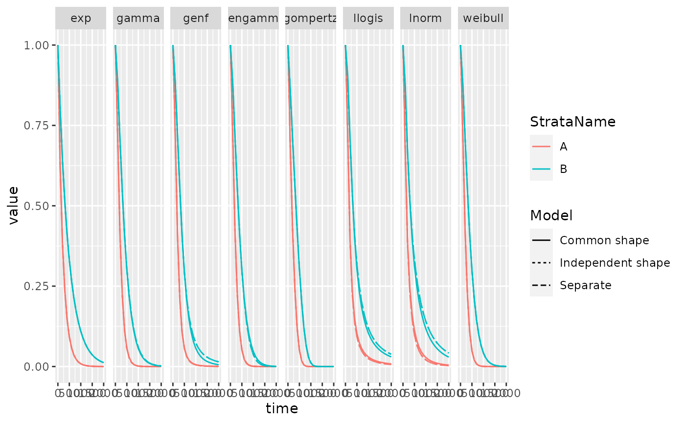
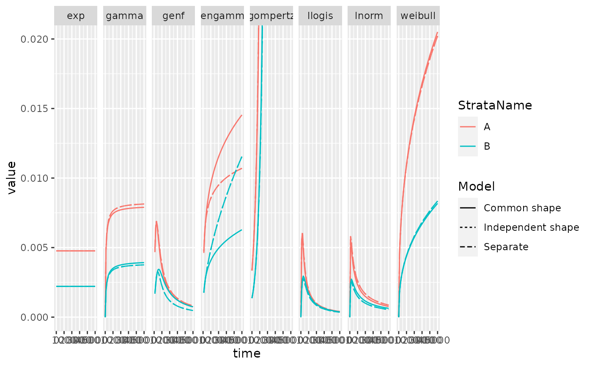
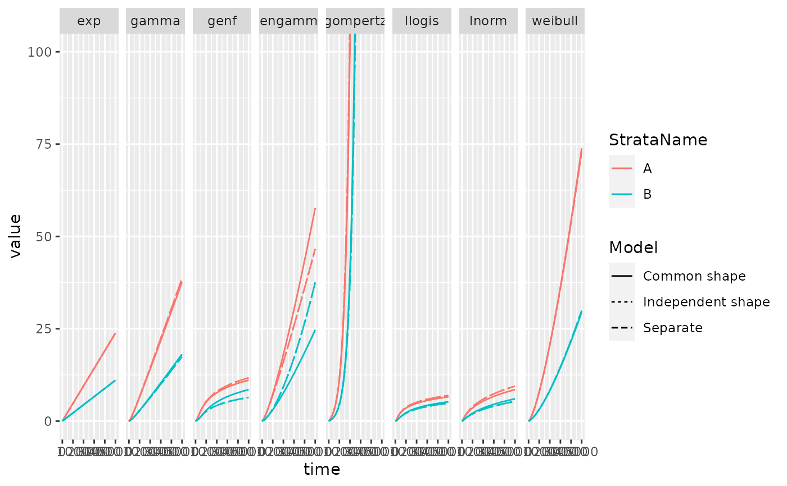

summaryPSM.RdExtract information about fitted parametric survival models
summaryPSM( x, types = c("mean", "survival", "hazard", "cumhaz", "median", "rmst"), t = NULL, ci = FALSE, se = FALSE )
| x | An object created by calling |
|---|---|
| types | A list of statistics to extract - see |
| t | The time points to be used - see |
| ci | Should a confidence interval be returned - see |
| se | Should a standard error be returned - see |
A data frame containing the following values
Model - as specified in runPSM model.type
Dist - as specified in runPSM distr
Strata - Either Intervention or Reference
StrataName - As specified by int_name and ref_name respectively in runPSM
type - as defined by the types parameter see summary.flexsurvreg for details
variable - "est", "lcl", "ucl", "se" respectively
time - either NA or the time the statistic is evaluated at
value - estimated value
#>PFS_data <- sim_adtte(seed = 2020, rho = 0.6) %>% filter(PARAMCD=="PFS") %>% transmute(USUBJID, ARMCD, PFS_days = AVAL, PFS_event = 1- CNSR ) psm_pfs <- runPSM( data = PFS_data, time_var = "PFS_days", event_var = "PFS_event", strata_var = "ARMCD", int_name = "A", ref_name = "B")#>#>#>#>#>#>#>#>#>#>#>#>#>#>#>#>#>#>#>#>#>#>#>#>#>#>#>#>#>#>#>#>#>#>#>#>summaryPSM(psm_pfs, types = c("mean","rmst"), t = c(100,2000)) %>% filter(Dist == "gengamma", Strata == "Intervention")#> # A tibble: 9 × 8 #> Model Dist Strata StrataName type variable time value #> <chr> <chr> <chr> <chr> <chr> <chr> <dbl> <dbl> #> 1 Separate gengamma Intervention A mean est NA 206. #> 2 Common shape gengamma Intervention A mean est NA 206. #> 3 Independent shape gengamma Intervention A mean est NA 206. #> 4 Separate gengamma Intervention A rmst est 100 88.0 #> 5 Separate gengamma Intervention A rmst est 2000 206. #> 6 Common shape gengamma Intervention A rmst est 100 87.8 #> 7 Common shape gengamma Intervention A rmst est 2000 206. #> 8 Independent shape gengamma Intervention A rmst est 100 88.0 #> 9 Independent shape gengamma Intervention A rmst est 2000 206.summaryPSM(psm_pfs, types = "survival", t = seq(0,2000,100)) %>% ggplot(aes(x=time, y = value, color = StrataName, linetype = Model)) + geom_line()+ facet_grid(~Dist)summaryPSM(psm_pfs, types = "hazard", t = seq(0,5000,100)) %>% ggplot(aes(x=time, y = value, color = StrataName, linetype = Model)) + geom_line()+ facet_grid(~Dist) + coord_cartesian(ylim = c(0,0.02))summaryPSM(psm_pfs, types = "cumhaz", t = seq(0,5000,100)) %>% ggplot(aes(x=time, y = value, color = StrataName, linetype = Model)) + geom_line()+ facet_grid(~Dist) + coord_cartesian(ylim = c(0,100))